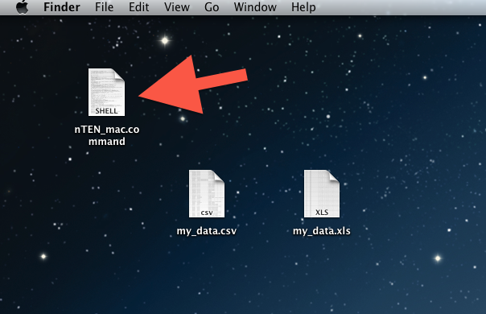
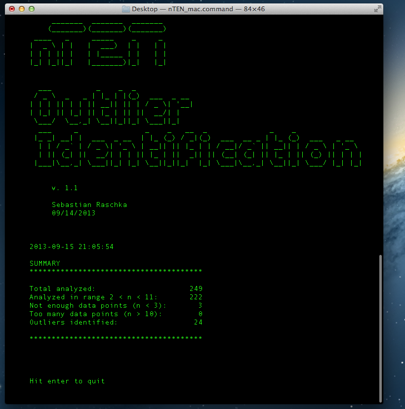
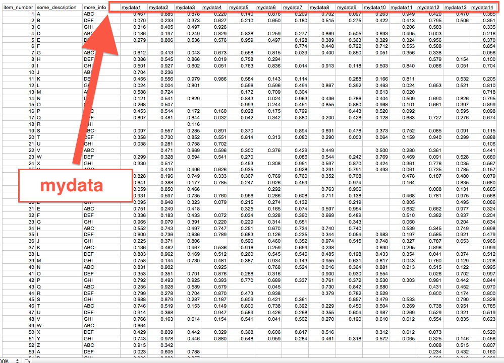
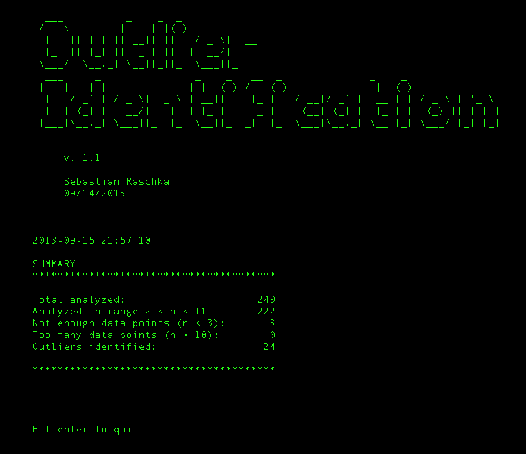
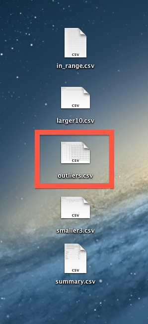
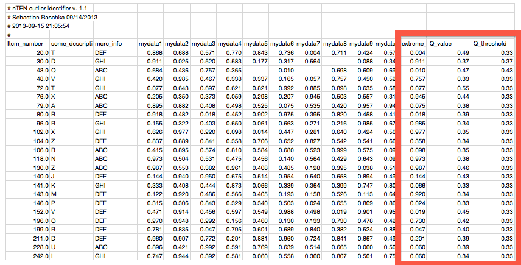

nTEN is a tool to identify outliers in large data sets with few numbers of observations. It’s algorithm is based on Dixon’s Q test, a statistical test that works very well for sample sizes smaller than 10.
Dixon’s Q test for outliers was first described in a paper from 1951. The method was established to delete extraneous data points from data sets with small numbers of observations. The confidence of rejecting the outlier is > 90 %, assuming the population is normally distributed. As Dixon reports in his paper, “These methods are usually more exact than the statistic of large numbers applied directly to small numbers of observations.”
R. B. Dean and W. J. Dixon (1951) "Simplified Statistics for Small
Numbers of Observations". Anal. Chem., 1951, 23 (4), 636-638
[PDF]
Getting Started with nTEN
I tried to make nTEN as simple to use a possible, thus you can just
launch it directly with a double-click.

A window will open where you will be prompted to enter the location and name of the data file you want to analyze. nTEN can read from CSV and Excel spreadsheet files - and don’t worry, the program is able to detect automatically which file type you provided.
Based on what the input file type, you will be prompted with a
different set of questions. But if you are fine with the default
options, you can just press ENTER.

One crucial part though, is that you have to provide an appropriate “Data column header.”
The “Data column header” is basically the keyword that all the columns, which contain the numerical data to be analyzed, have in common. In the example file below this would be “mydata.”

If everything worked out seamlessly, you will see a summary of the results that should look like the screenshot below.

Additionally, the detailed results will be automatically saved as .csv files to the location that you were prompted to specify in the beginning.

The most interesting of those files is probably “outliers.csv” since it contains the outliers that could be identified in the data set.
The “outliers.csv” contains the input data for the samples that contain outliers, and additionally, you will find 3 more columns to the right. “Extreme value” contains the value of the identified outlier, the “Q value” of this outlier, and the “Q threshold” (an extreme value is considered to be an outlier if its calculated Q value exceed the tabulated Q threshold for the given sample size).

| Mac OS X | v 1.2 |
| Linux | v 1.2 |
| Windows | v 1.2 |
Note:
If you have a particular LinuxDistro that does not support the current Linux version of PDB to FASTAconverter, please let me know, and I will try to compile the appropriate version for you.